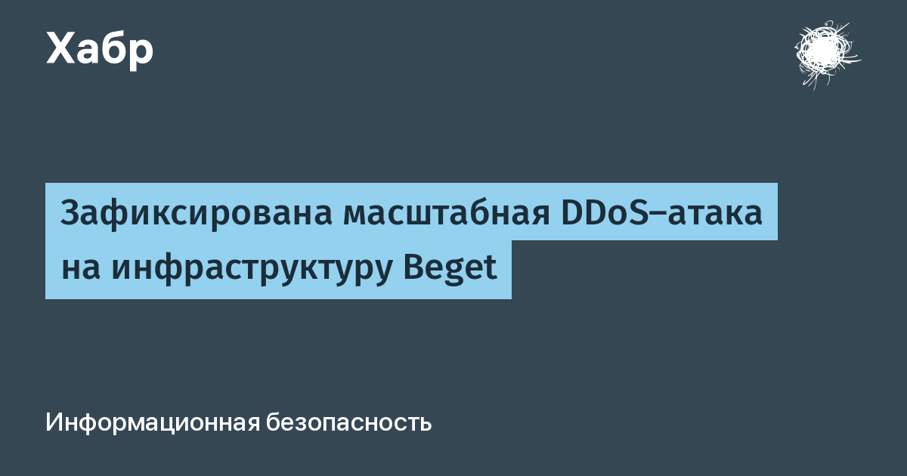

15 ноября Beget сообщил в своём официальном Telegram-канале, что его инфраструктура подверглась масштабной DDoS-атаке мощностью до 850 гигабит в секунду. Атакующие последовательно перебирают сетевые диапазоны провайдера, пытаясь выбить из строя оставшиеся живыми сервисы. По оценке самой компании, характер атаки указывает на одну цель: сорвать планы по восстановлению после первого взлома.
Из-за перебора подсетей и общей высокой интенсивности трафика у части клиентов временно не открывались сторонние ресурсы — в официальном уведомлении названы Ozon, Wildberries, Сбербанк и другие крупные сервисы: их пользователи ошибочно принимали за недоступными, хотя проблема была в связности сетей Beget. В качестве ответной меры провайдер ограничил SSH-подключения с адресов за пределами России — не более пяти попыток в секунду с одного IP.
Напомню хронологию. В ночь на 2 ноября на инфраструктуру Beget была совершена атака с получением доступа к управляющему контуру всей архитектуры и запуском обнуляющих скриптов: облако (VPS, S3, Kubernetes) оказалось уничтожено, компания объявила форс-мажор и восстанавливала более тысячи серверов вручную, а Координационный центр доменов временно приостановил аккредитацию Beget как регистратора доменов .ru и .рф. Теперь, когда сервисы начали подниматься, последовал второй удар — уже по доступности.
Beget рекомендует сменить все пароли, ключи доступа и другие учётные данные, которые могли храниться на серверах. Пока основная панель управления работает с ограничениями, DNS-записями доменов в зонах .ru, .рф и .su можно управлять через отдельную страницу domains.beget.ru — там же домен можно перенаправить на адреса другого хостинга. Оценки масштабов новых потерь не публиковались: официальное уведомление говорит только об атаке на доступность.